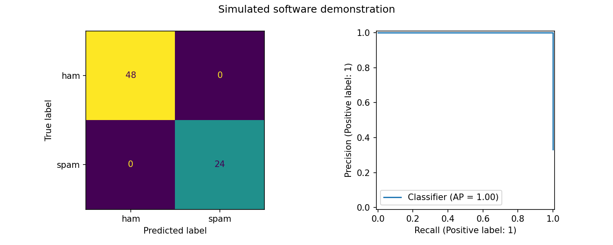

Data: SIMULATED demonstration fixture; not a real-data benchmark. Selected model: word_naive_bayes. Normalized duplicate texts cannot cross splits. Model and threshold selection use validation only. The keyword spelling condition is a diagnostic perturbation of the same test messages.
| model | condition | threshold | accuracy | spam_f1 | macro_f1 | spam_precision | spam_recall | average_precision | roc_auc | log_loss | data_source |
|---|---|---|---|---|---|---|---|---|---|---|---|
| prevalence_baseline | clean | 0.3333 | 0.3333 | 0.5000 | 0.2500 | 0.3333 | 1.0000 | 0.3333 | 0.5000 | 0.6365 | SIMULATED demonstration fixture; not a real-data benchmark |
| word_naive_bayes | clean | 0.5000 | 1.0000 | 1.0000 | 1.0000 | 1.0000 | 1.0000 | 1.0000 | 1.0000 | 0.0000 | SIMULATED demonstration fixture; not a real-data benchmark |
| word_logistic | clean | 0.5000 | 1.0000 | 1.0000 | 1.0000 | 1.0000 | 1.0000 | 1.0000 | 1.0000 | 0.0161 | SIMULATED demonstration fixture; not a real-data benchmark |
| character_logistic | clean | 0.5000 | 1.0000 | 1.0000 | 1.0000 | 1.0000 | 1.0000 | 1.0000 | 1.0000 | 0.0113 | SIMULATED demonstration fixture; not a real-data benchmark |
| prevalence_baseline | keyword_spelling_perturbation | 0.3333 | 0.3333 | 0.5000 | 0.2500 | 0.3333 | 1.0000 | 0.3333 | 0.5000 | 0.6365 | SIMULATED demonstration fixture; not a real-data benchmark |
| word_naive_bayes | keyword_spelling_perturbation | 0.5000 | 1.0000 | 1.0000 | 1.0000 | 1.0000 | 1.0000 | 1.0000 | 1.0000 | 0.0000 | SIMULATED demonstration fixture; not a real-data benchmark |
| word_logistic | keyword_spelling_perturbation | 0.5000 | 1.0000 | 1.0000 | 1.0000 | 1.0000 | 1.0000 | 1.0000 | 1.0000 | 0.0768 | SIMULATED demonstration fixture; not a real-data benchmark |
| character_logistic | keyword_spelling_perturbation | 0.5000 | 1.0000 | 1.0000 | 1.0000 | 1.0000 | 1.0000 | 1.0000 | 1.0000 | 0.0245 | SIMULATED demonstration fixture; not a real-data benchmark |
| model | validation_average_precision | validation_spam_f1 | threshold |
|---|---|---|---|
| word_naive_bayes | 1.0000 | 1.0000 | 0.5000 |
| word_logistic | 1.0000 | 1.0000 | 0.5000 |
| character_logistic | 1.0000 | 1.0000 | 0.5000 |
| prevalence_baseline | 0.3333 | 0.5000 | 0.3333 |
